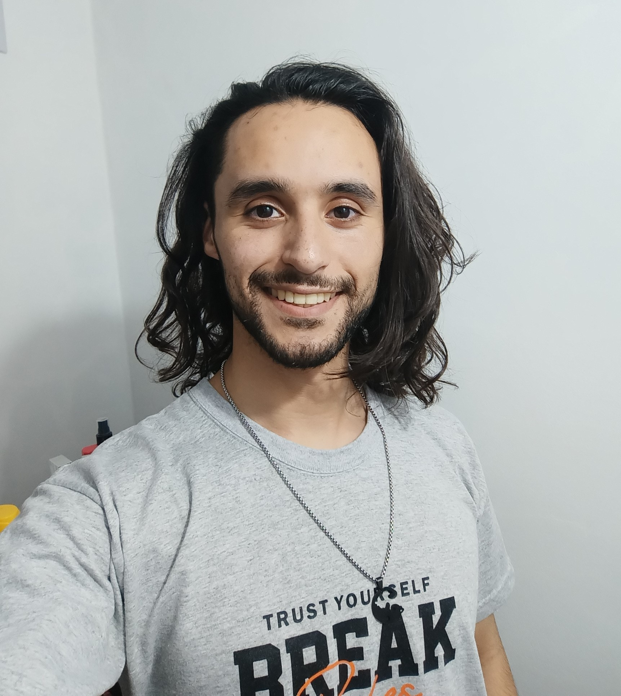
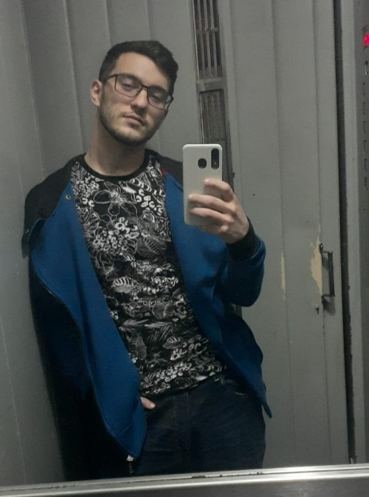
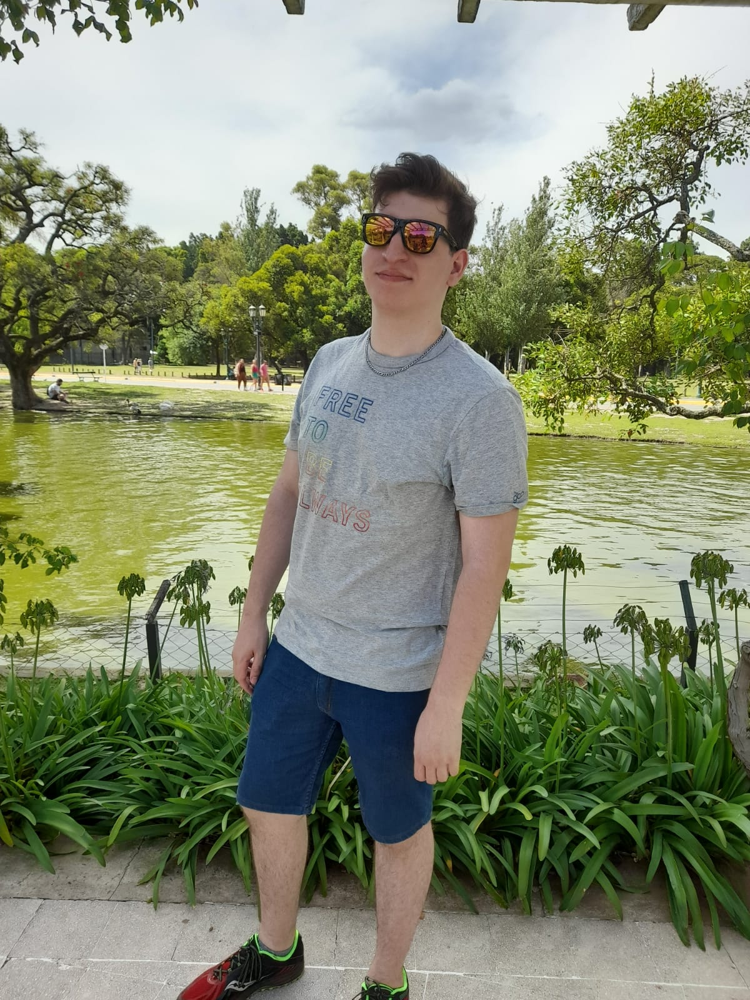
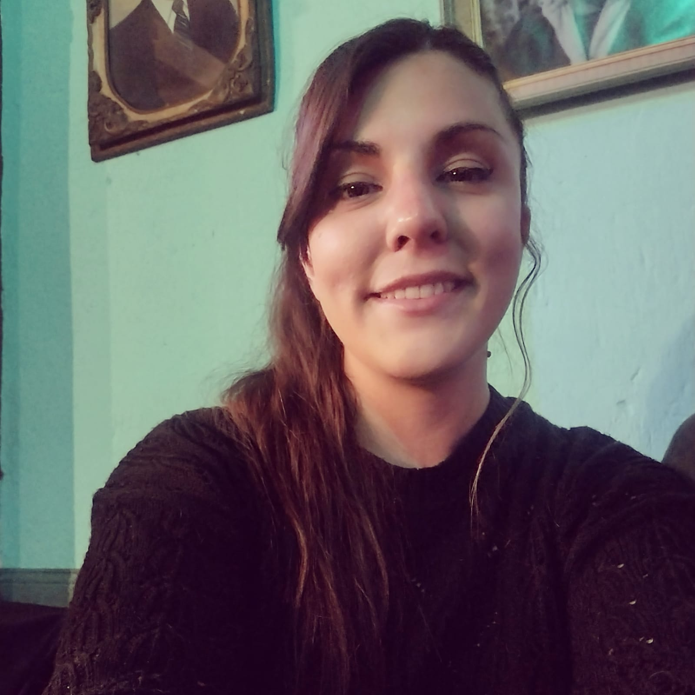

¿Quiénes somos?
Amantes de la cocina y de los memes, somos un grupo de programadores que esta iniciando su formacion en desarrollo web.
-

Federico Garrone
Soy un entusiasta de la tecnología desde pequeño, cuando jugaba desarmando PCs que ya no servían. Inicié mis estudios en la computación para luego ir a la electrónica, donde conocí el mundo de la programación. Me gusta investigar y aprender cosas nuevas, y aspiro a convertirme en un excelente Web Developer profesional. -

Facundo Castro
Soy Facundo Castro, Licenciado en Relaciones del Trabajo UBA, me gusta leer libros, series o pelis, en especial sobre fantasía medieval o antigua, los mangas, los perros, entre otras cosas. Actualmente busco desarrollar habilidades de desarrollo de programación para aplicarlas a mi campo y automatizar lo más posible, permitiendo que la atención y el trabajo se enfoquen en lo importante, las personas. -

Gaston Mayán
Mi nombre es Gastón Mayán y soy estudiante de sistemas en la UNLA y de medicina en la UBA. Me gusta salir a recorrer la ciudad y los animales, especialmente los perros. Actualmente agregando habilidades que me permitan trabajar en sistemas mediante el curso Fullstack de python. -

Gisel Lopez
Soy estudiante de Ingeniería en Sistemas, carrera que comencé porque me fascina el mundo tecnológico. Resolver problemas e investigar es algo que me gustó toda la vida, y descubrí que con la programación y herramientas de análisis de datos, es todo más sencillo y eficiente. Paso a paso, aprendiendo un poco cada día, comencé un camino que me apasiona, y con el que espero seguir creciendo.